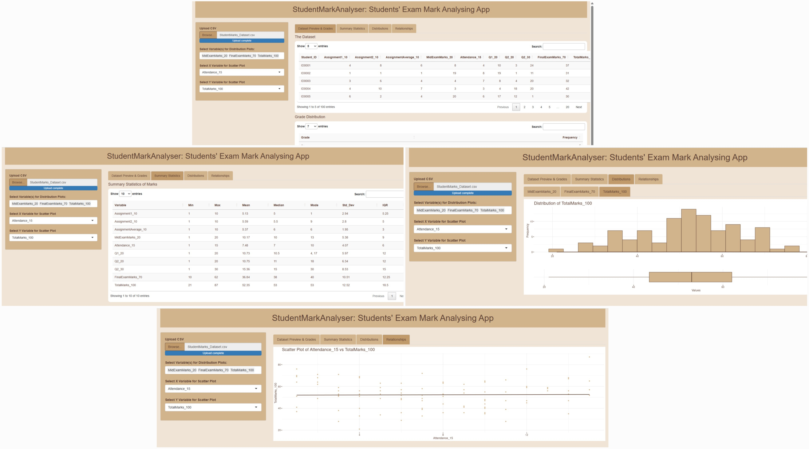
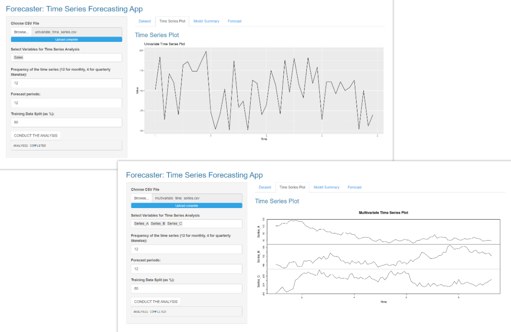
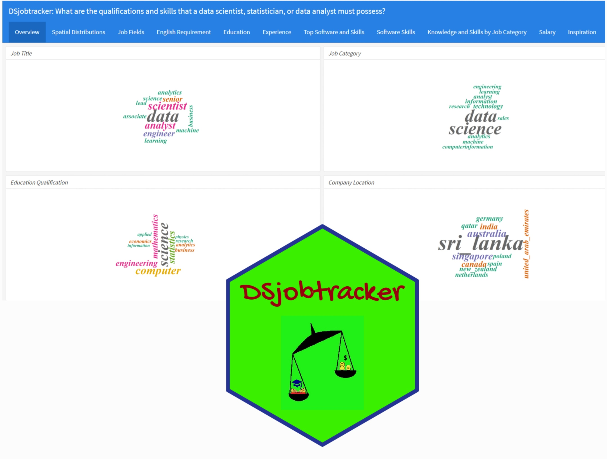
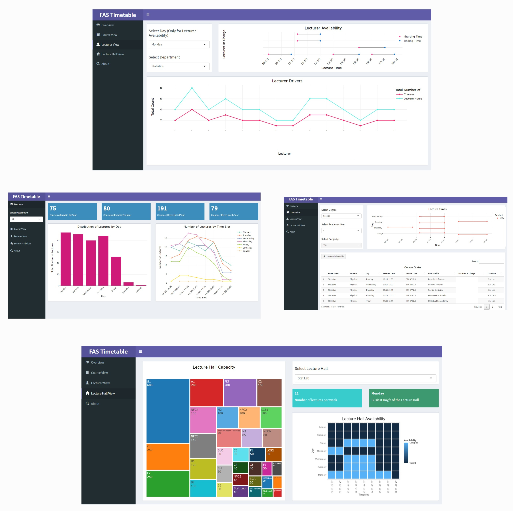
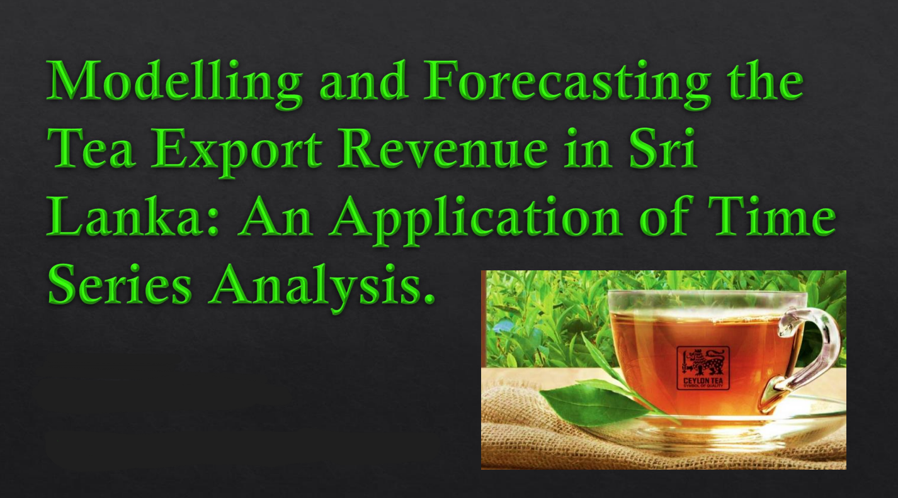
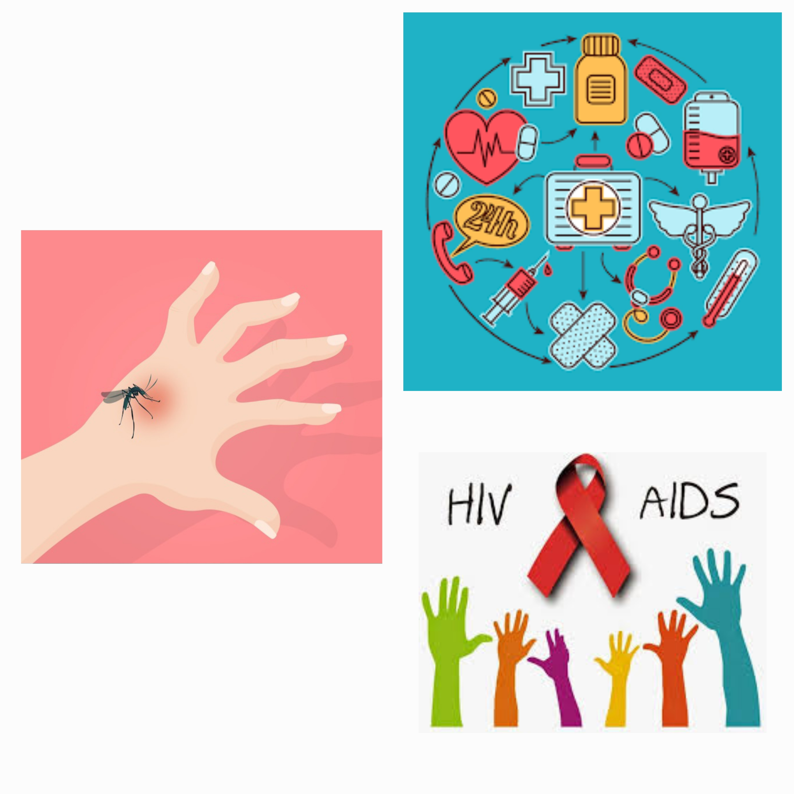

Projects
BSc (Honours) in Statistics - Final Year Research Project
Effectiveness of Using Candlestick Charts to Forecast Ethereum Price Direction: A Machine Learning Approach
- This research is among the very few research which is done focusing on Cryptocurreny price direction forecasting based on candlestick chart properties.
- The project started with a thorough literature review and was able to fill the identified research gap.
- Introduced a novel algorithm to forecast the price direction based on clustering and classification techniques.
- Rewarded with a grade of A (Grade point: 4.00 out of 4.00) at the final evaluation.
- Won a merit award from the undergraduate category of the Best Research Awards 2023, organized by the Institute of Applied Statistics Sri Lanka (IASSL).
- Published as an article in the Sri Lanka Journal of Applied Statistics (SLJAS), Volume 25 Issue 1.
Interactive Tools
StudentMarkAnalyser: Students’ Exam Mark Analysing App

A shiny app to input marks of an examination and obtain the analysis. Anyone needing to conduct an analysis from a mark sheet using an interactive tool can take advantage of this shiny app. Even the users who are not familiar with obtaining statistical outputs from software can take the maximum benefit from this user friendly interactive tool.
Shiny App | Code
Forecaster: Time Series Forecasting App

This app was created with the purpose of using a time series dataset, fitting the appropriate model and generating forecasts. The users can input a univariate time series dataset or a multivariate time series dataset in the ascending order of date. The app is designed to optimize parameters and fit the most appropriate model.
Shiny App | Code
WillRogersParadoxExperimenter: Will Rogers Paradox Experimenting App
Academic Projects
DSjobtracker

This project is about data science jobs. The R flexdashboard was created using the data collected from data science job advertisements. This dashboard provides an idea about the job fields, job requirements, expected education qualifications, skills and experience. This project was done as a group work, under the guidance of Dr. Thiyanga Talagala who is a Senior Lecturer at the Department of Statistics, Faculty of Applied Sciences, University of Sri Jayewardenepura.
Dashboard | CRAN R Package | Code | Video on how the dashboard works
Time table dashboard for FAS, USJ

This project is about visualizing the time table of the Faculty of Applied Sciences, University of Sri Jayewardenepura. The R shiny dashboard was created using the data collected from time tables. This dashboard provides an idea about the overview of the faculty time table, course view, lecturer view and lecture hall view. This project was done as a group work, under the guidance of Dr. Thiyanga Talagala who is a Senior Lecturer at the Department of Statistics, Faculty of Applied Sciences, University of Sri Jayewardenepura.
Code | Video on how the dashboard works
Tea Export Revenue Forecasting and Analyzing the Impact of COVID-19

This project is about modelling and forecasting the tea export revenue in Sri Lanka. The data set was collected from the Central Bank of Sri Lanka. The impact of COVID-19 on Sri Lankan tea export revenue was assessed. Time series analysis was done under two approaches and a SARIMA model was used to generate forecasts.
Code
Myth analysis about mosquito bites and HIV/AIDS

This project investigated how the knowledge regarding the myth of HIV/AIDS, “People can get HIV virus from mosquito bites” varies on ever married women’s socio and demographic characteristics. This study is based on Sri Lanka Demographic and Health survey (DHS) in 2016 conducted by the Department of Census and Statistics (DCS). A logistic regression model was fitted based on the analysis.
Code